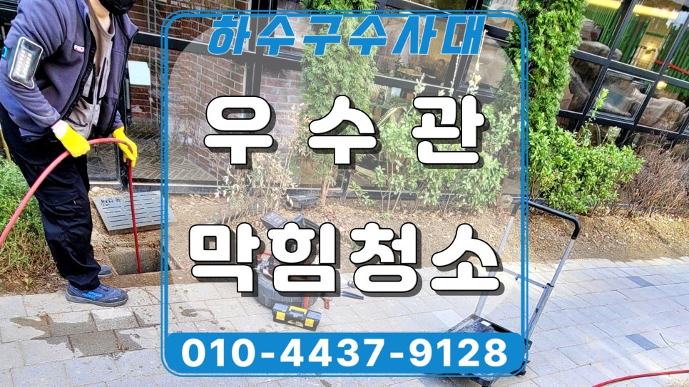
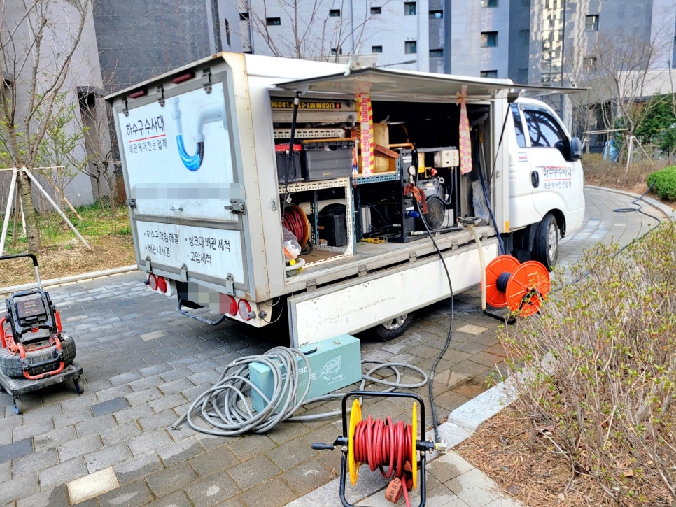
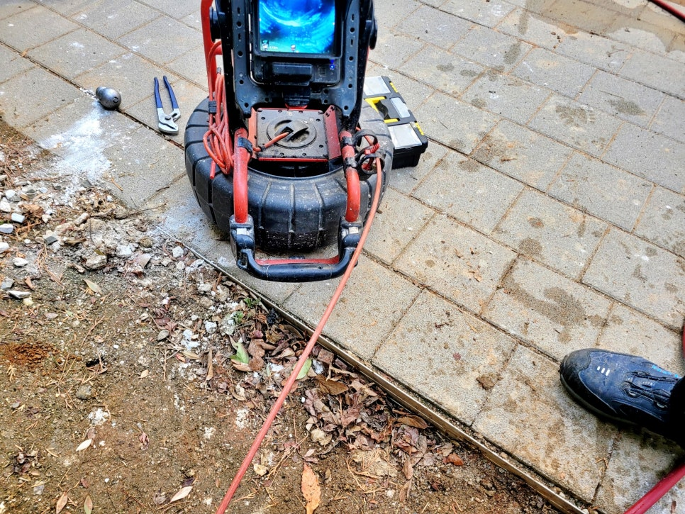
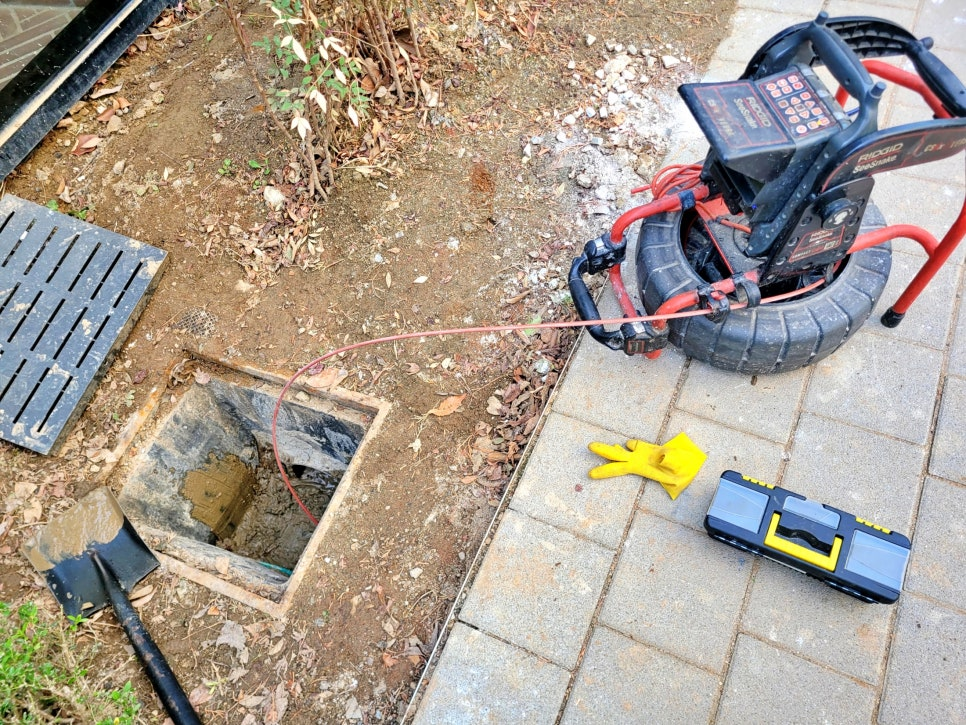
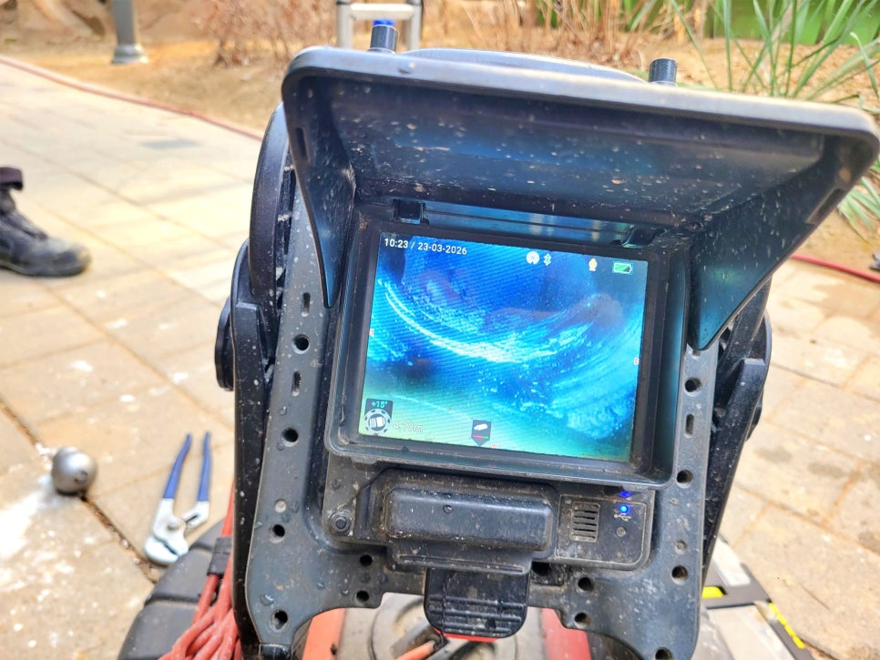
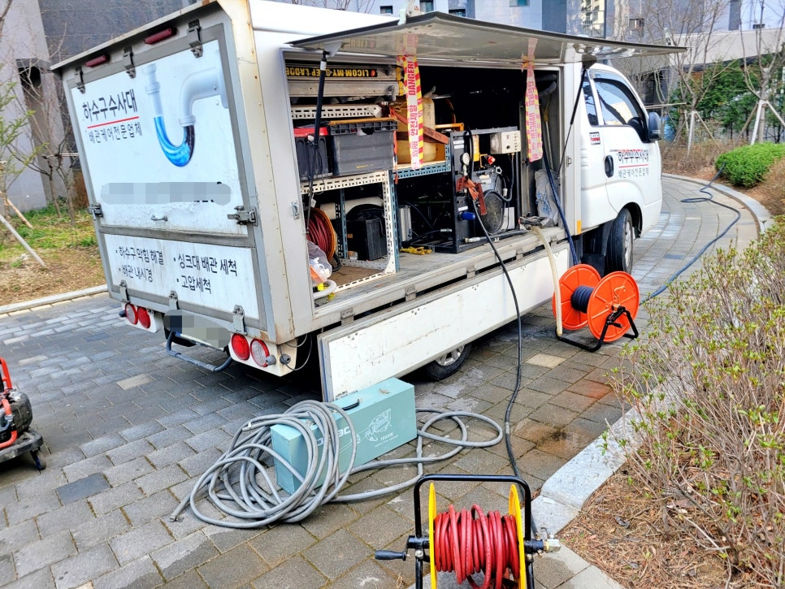
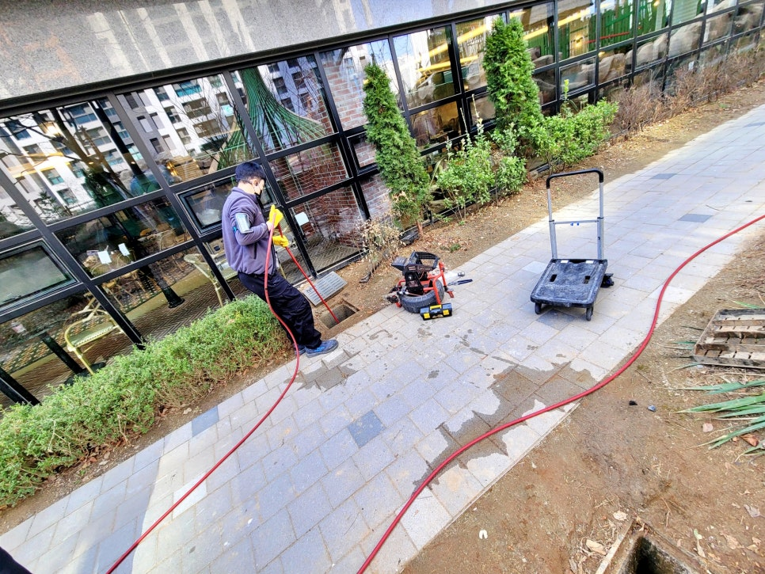

🏠 용인 영덕동 아파트 우수관막힘, 비 올때마다 넘치는 원인 해결
용인 영덕동 하수구막힘 전문 시공 후기

📋 작업 개요
- 위치: 용인 영덕동, 영덕동, 용인
- 서비스 유형: 하수구막힘, 배관막힘, 맨홀막힘, 역류해결, 배관청소, 고압세척
- 작업 일시: 2026. 4. 11. 16:39
- 업체명: 하수구수사대 (010-5615-2118)
🔍 문제 상황
용인 영덕동 아파트 우수관막힘 역류,
우천시 보도로 넘치는 원인 배관 속
몰탈과 모래 고압세척으로 해결
안녕하세요.
용인 영덕동 아파트 우수관막힘 역류
배관청소 전문업체 하수구수사대입니다.
오늘 현장은 용인 영덕동 아파트에서
비가 올 때마다 우수관이 제 역할을
하지 못하면서 보도 쪽으로 물이
넘쳐 불편이 이어지던 곳이었는데요.
하수구수사대 고압세척 작업 차량
현장에 장비를 내리고 배수 흐름부터
살펴보니 단순 낙엽 문제라기보다
우수관 내부에 이물 퇴적이 쌓여
통수 구간이 좁아진 상황이었습니다.
내시경 카메라 점검 중
영덕동 우수관막힘 청소 현장 개요
1. 장소 : 용인 영덕동 아파트
2. 증상 : 비 올 때마다 우수관 역류
3. 원인 : 몰탈과 모래 퇴적

🔎 원인 분석
💡 전문가 진단: 용인 영덕동 아파트 우수관막힘 역류,우천시 보도로 넘치는 원인 배관 속몰탈과 모래 고압세척으로 해결
4. 작업 : 내시경 카메라 점검 후 고압세척
맨홀을 열어 배관 상태를 살펴보니
우수관 연결 구간에 몰탈 조각과
모래가 함께 쌓여 있는 모습이
드러났는데요.
이런 상태에서는 평소엔 큰 문제가
없다가 비가 많이 오는 날엔 배수량을
버티지못해 곧바로 역류로 이어지는
경우가 많습니다.
그래서 고압세척 장비를 투입하기 전
배관 진입 방향과 막힘 위치를 먼저
확인하고, 내시경 카메라로 내부를
더 세밀하게 들여다봤습니다.
영덕동 아파트 우수관막힘 현장
카메라 화면에서는 관 벽면을 따라
토사와 몰탈이 붙어 있고, 일부는
바닥에 쌓이면서 물길을 막는 모습이
보였는데요.
이후 고압세척 노즐을 투입해
막힌 구간을 반복 세척하면서

🔧 작업 과정
배관 안쪽에 붙은 이물과 바닥 퇴적물을
밀어내는 작업을 진행했습니다.
고압세척으로 제거된 몰탈과 모래
고압세척이 이어지자 우수관 안에
머물러 있던 모래와 찌꺼기가
밖으로 빠져나오기 시작했고,
막혀 있던 흐름도 점차 살아났는데요.
우수관막힘 고압세척 작업 장면
중간마다 다시 내시경으로 배관을
비춰 보면서 잔여 이물이 남았는지
살폈고, 고압세척 범위를 넓혀
문제 구간을 한 번 더 처리했습니다.
영덕동 우수관막힘 배관 청소 중
마지막에는 물 흐름을 테스트해
빗물이 지나가는 통로가 충분히
확보됐는지 점검했고, 이전처럼
머물거나 넘치는 모습은 없었습니다.
우수관막힘 고압세척 작업을 마치며
이번 용인 영덕동 아파트 우수관막힘
청소 현장은 비 올 때마다 반복되던
역류 원인이 내부에 쌓인 몰탈과
모래 퇴적으로 발생한 것이고요.
우수관막힘 문제는 평소엔 조용하다가
비 오는 날 갑자기 나타나는 만큼
우기나 장마철이 오기 전, 미리 배관 내부
상태를 점검해 보고 청소전문 업체에게
의뢰하는 것이 좋습니다.
마직막 내시경 카메라 점검 과정
지금 현재 우리 주변 우수관 속에는
겨울철 내 쌓였던 낙엽이나 토사로
인해 배관이 좁아지거나 심지어
막혔을 가능성이 많은데요.


✅ 작업 완료
비가 오기전 배관 청소 전문업체인
하수구수사대에게 점검과 청소를
받아보시는 것이 좋습니다.
오늘의
"용인 영덕동 아파트 우수관막힘 역류"
후기를 마치겠습니다.
긴 글 끝까지 읽어주셔서 감사합니다.
#용인영덕동아파트우수관막힘 #용인우수관막힘 #영덕동우수관청소업체 #우수관역류 #용인우수관고압세척 #용인아파트배관청소 #용인맨홀청소 #용인배관내시경점검업체 #우수관토사막힘제거 #하수구수사대 #영덕동고압세척업체




⚠️ 하수구 배관 막힘 예방 및 관리 가이드
- ✅ 머리카락, 비닐, 물티슈 등 물에 분해되지 않는 이물질은 하수구 유입을 절대 금지해 주세요.
- ✅ 하수구 거름망을 씌우고 모여진 이물질은 주기적으로 쓰레기통에 바로 비워주셔야 합니다.
- ✅ 배관 노후가 심할 경우 이물질이 더 쉽게 걸리므로 주기적인 배관 세척(고압세척 등)을 권장합니다.
- ✅ 작업 후 1년 이내 재발 시 하수구수사대에서 무상 A/S 보증 서비스를 제공합니다.
💡 핵심 정리
- 확실한 장비 작업(내시경 점검 및 샤프트 스케일링)으로 원인을 뿌리 뽑습니다.
- 작업 후 1년 이내에 동일한 부위 재발 시 100% 무상 A/S 서비스를 보장합니다.
- 서울 · 경기 · 인천 전 지역에 24시간 언제든 긴급 출동할 수 있도록 항시 대기 중입니다.
❓ 자주 묻는 질문 (FAQ)
🚨 용인 영덕동 하수구막힘 문제로 고민이신가요?
정확한 원인 진단과 확실한 시공으로 재발 없는 해결을 약속드립니다.
24시간 긴급 출동 | 서울 · 경기 · 인천 전지역 | 1년 내 재발 시 무상 A/S